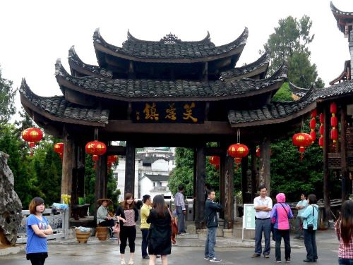

Welcome to my personal page
有人常常会问我们如何就会写小说？倘若我真真实实的来答复，我真想说：“你到湘西去旅行一年就好了。” ——沈从文《湘行散记》
如果读过沈从文先生的《边城》与《湘行散记》，你一定会对湘西的风土人情产生浓厚的兴趣，想寻觅发生在那片神秘土地的爱恨情仇。 怀着对沈从文先生的敬意与对湘西的无限好奇。2021年7月，我来到湘西，走过沈老先生曾经走过的路，体会那种独属于湘西的神秘与秀美。
| 景点名称 | 日期 | 图片 | 旅游简介 |
|---|---|---|---|
| 第一站：张家界 | 2021年7月25日 | |
张家界国家森林公园是我国建立的第一个国家级森林公园，距离张家界市区32公里，这里的自然风光以峰称奇、以谷显幽、以林见秀。武陵源有三千奇峰，如人如兽，如器如物，形象非常逼真，气势壮观。在峡谷之间，流溪潺潺，浓荫遮日，一直有“三千奇峰、八百秀水”的美誉。 |
| 第二站：天门山 | 2021年7月26日 | |
天门山文化底蕴深厚，神农、赤松子、鬼谷子均留有遗迹，还有大量赞咏天门山的诗词，有着“天门洞开、鬼谷显影、独角瑞兽”等传说。天门山寺自唐朝以来香火鼎盛，寺外七级浮屠，古雅幽清，寺内安奉有珍贵释迦牟尼佛舍利，是张家界的文化圣地，被尊为“张家界之魂”、“湘西第一神山”。 |
| 第三站：凤凰古城 | 2021年7月27日 | |
凤凰古城建于清康熙四十三年（1704年），东门和北门古城楼尚在。城内青石板街道、江边木结构吊脚楼，以及朝阳宫、古城博物馆、杨家祠堂、沈从文故居、熊希龄故居、天王庙、大成殿、万寿宫等建筑，全都透着古城特色。 |
| 第四站：芙蓉镇 | 2021年7月28日 |  | 芙蓉镇原名王村，位于湖南省湘西土家族苗族自治州西北部永顺县，是一座具有2000多年历史的土家族聚居小镇。千年瀑布穿镇而过，吊脚楼群挂在悬崖，因而有了“挂在瀑布上的千年古镇”之称。1986年，导演谢晋在此拍摄电影《芙蓉镇》，小镇从此声名大噪，并更名芙蓉镇。这座小镇，有着水墨丹青般的自然奇观、幽远神秘的土家文明，还承载着波澜壮阔的革命历史。 |
游天门山视频分享
返回首页